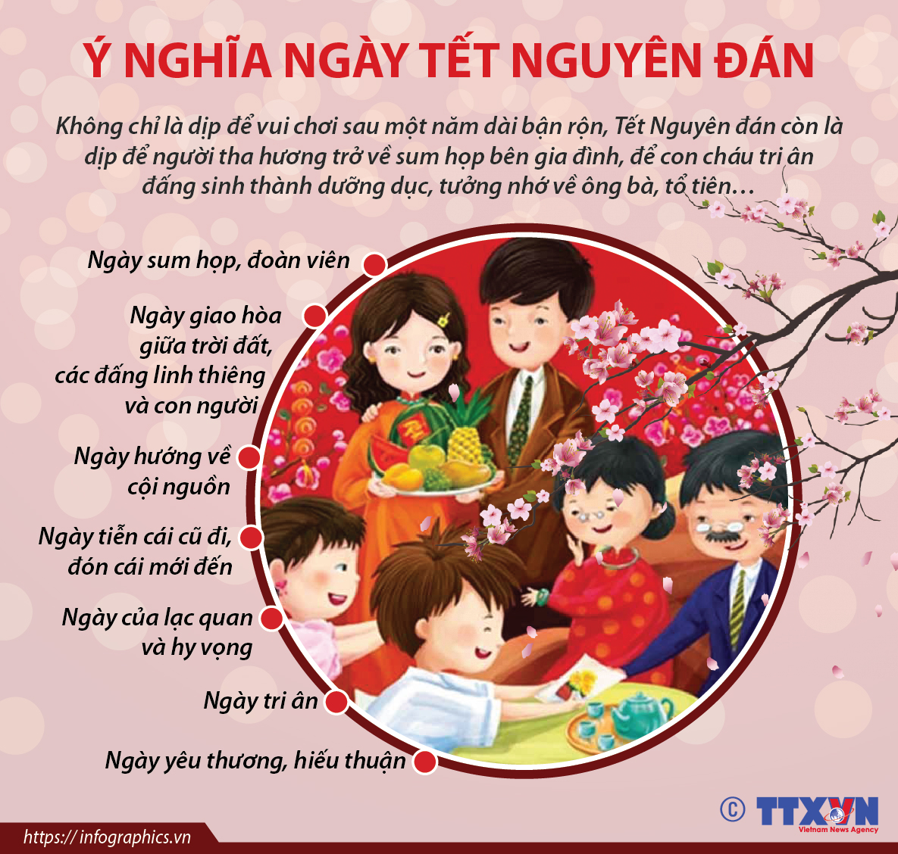
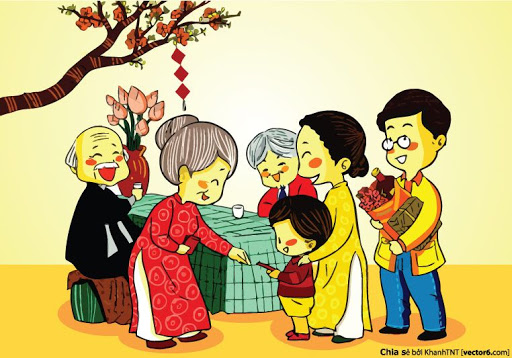

Nguồn gốc Tết Nguyên đán bắt nguồn từ Trung Quốc.Đến đời nhà Đông Chu, Khổng Tử đổi ngày Tết vào một tháng nhất định là tháng Dần. Nhưng đến đời nhà Tần (TK 3, TCN) Tần Thủy Hoàng lại đổi qua tháng Hợi (tháng 10) làm tháng Tết. Rồi đến nhà Hán, Hán Vũ Đế (140 TCN) lại đặt ngày Tết vào tháng Dần tức là tháng Giêng.
Tết Nguyên Đán là lễ hội truyền thống lớn nhất trong năm của người Việt. Đó là điểm giao thời giữa năm cũ và năm mới, nó thể hiện sự gắn kết trong cộng đồng, gia tộc và gia đình. Đó là giá trị tâm linh, cũng là giá trị tình cảm sâu sắc của người Việt.
Trong các hoạt động ngày Tết điển hình chắc chắn không thể bỏ qua việc dọn dẹp, trang trí nhà cửa. Bày mâm ngũ quả cũng là một trong những hoạt động ngày Tết không thể thiếu của hầu hết mọi gia đình Việt. Ngoài ra còn có gói bánh chưng, Tất Niên, cúng Ông Táo,...Vào thời khắc chuyển giao giữa năm cũ và năm mới, người Việt thường có thói quen bày mâm cúng để đón Giao Thừa.
